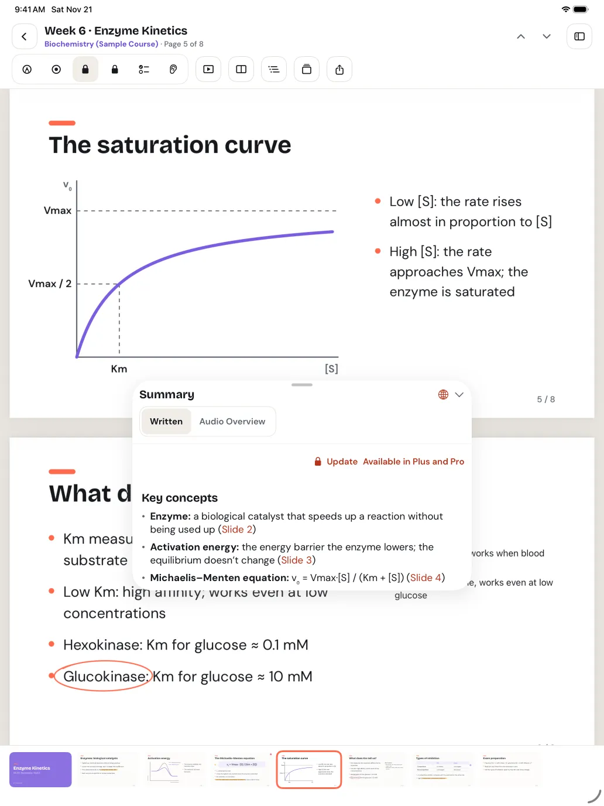
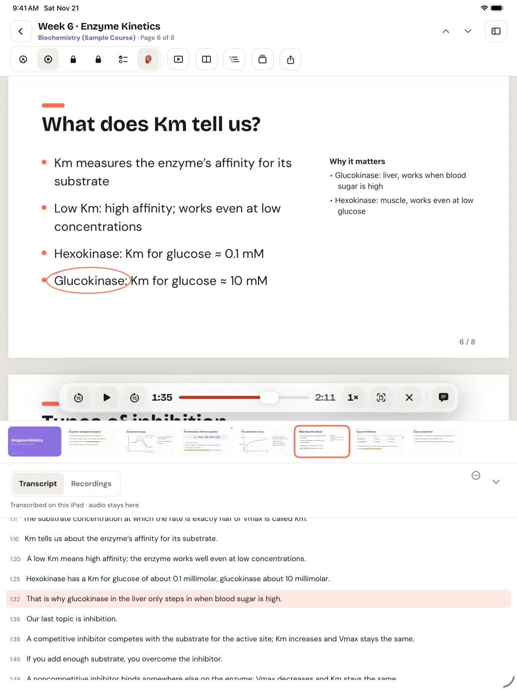
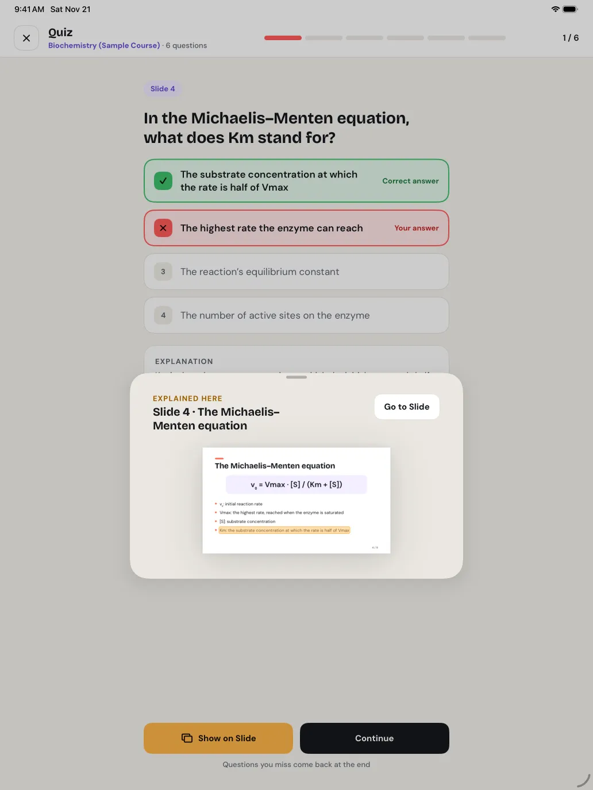
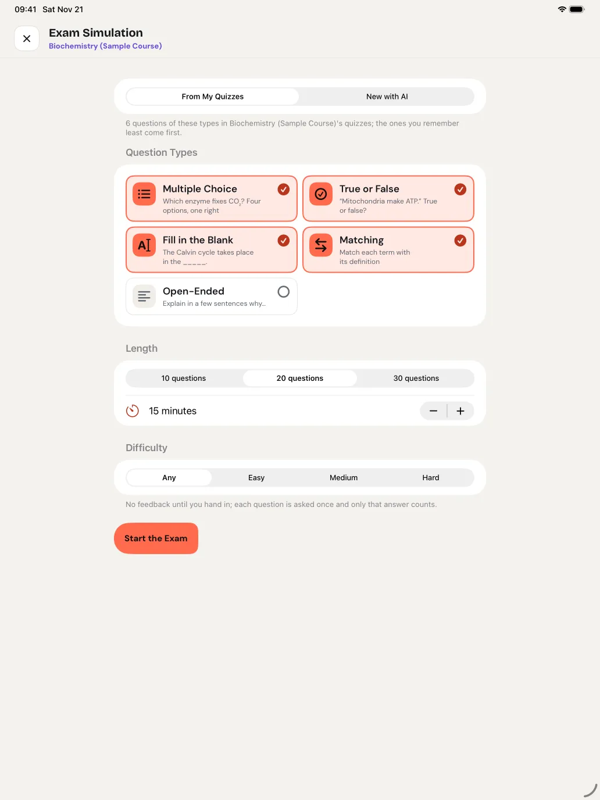
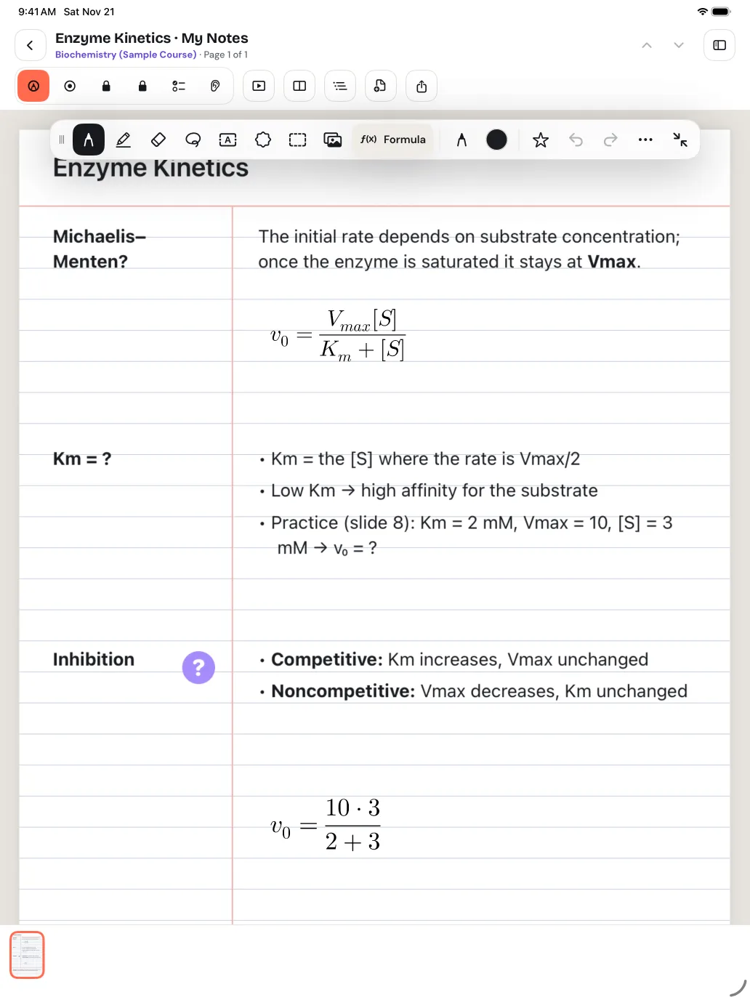
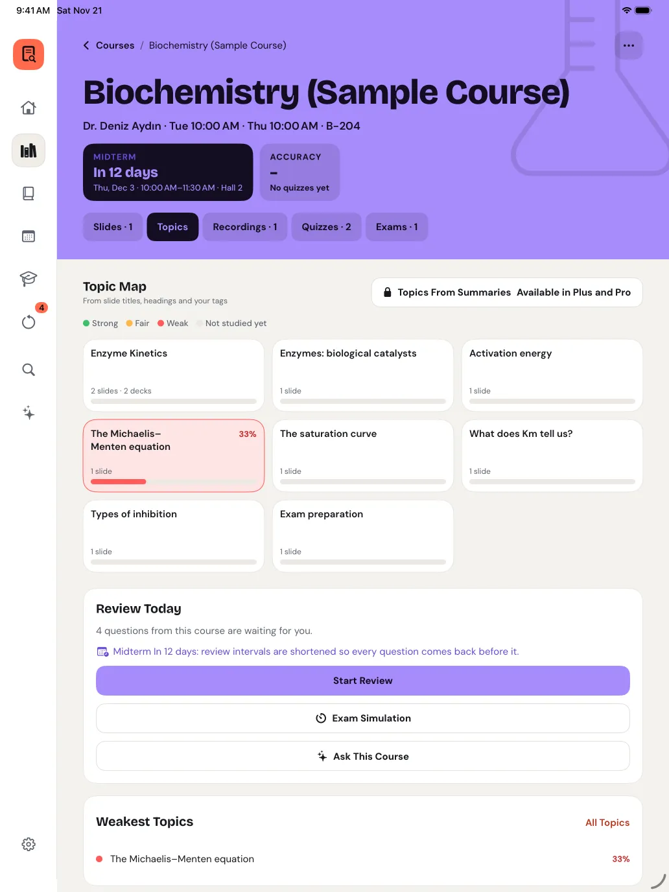
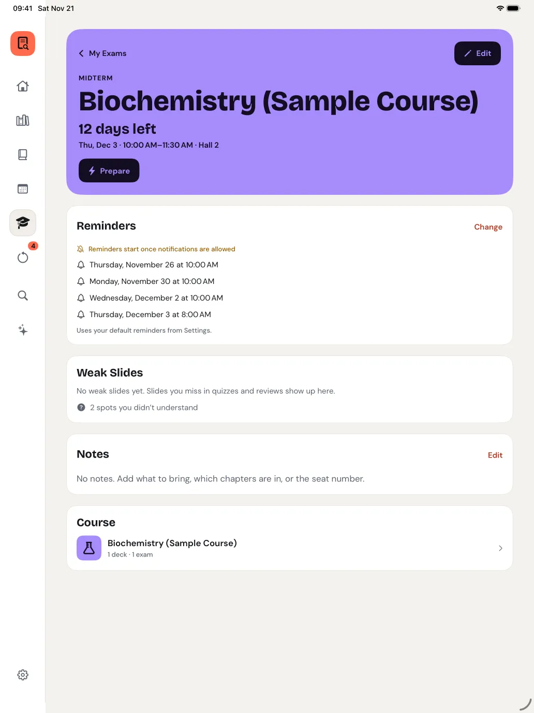
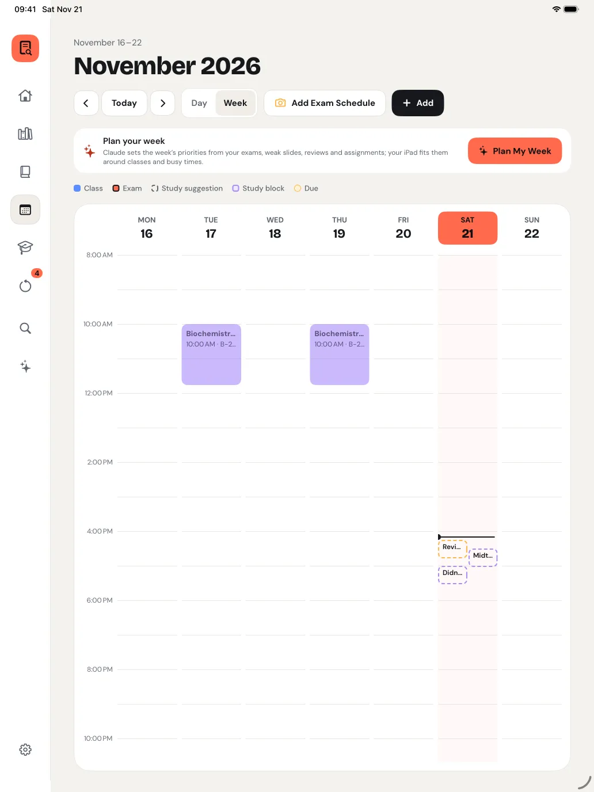
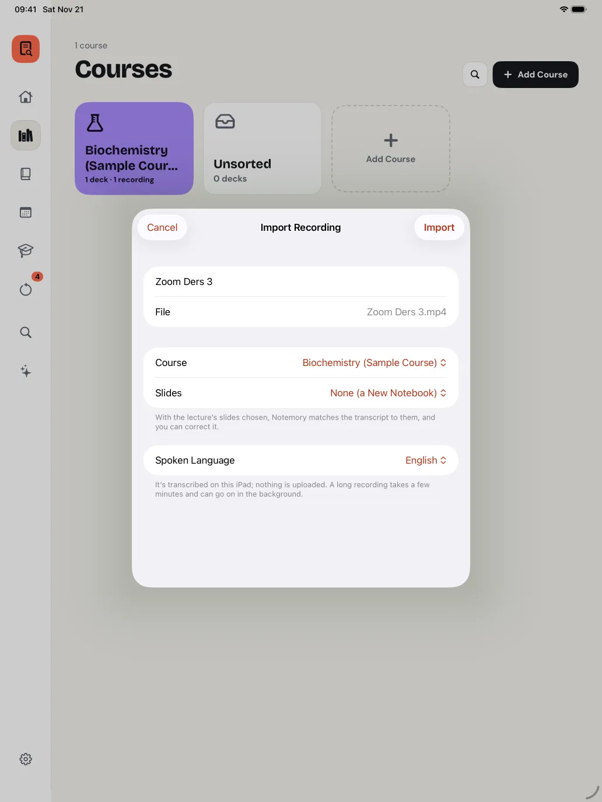

iCloud sync and backups
Slides, ink, notebooks and recordings sync through your own iCloud. Both devices’ ink is kept when they meet. Export a backup any time.
Record the lecture, write on your slides with Apple Pencil, and tap your ink to hear what was said at that moment. AI turns it into summaries and quizzes that point back to the exact slide.
For iPad, with or without Apple Pencil. Free to start.

Import the lecture’s slides, press record and write on them with Apple Pencil. The transcript is made on your iPad as the lecturer speaks, and every word knows which slide was on screen.

Every stroke remembers its moment in the recording. Turn on Listen, tap a word you circled, and playback jumps right there. Replay your notes as they were written, in time with the lecture.
Get a summary of the slides and the lecture where every point cites its slide. Take quizzes in seven question types; after each answer, “Show on Slide” highlights the exact line it came from.


Circle a handwritten formula and it becomes clean, editable LaTeX. Graph a function on the page. Stuck on a problem? Reveal the solution one step at a time, or let it find the first wrong line in your own working.

Every course becomes a map of its topics, with how well you know each one from your quizzes and reviews. Weak topics turn red, and one tap starts a quiz on exactly those slides.

Photograph your exam schedule and the exams are added for you. See the countdown and how ready you are, practise with a timed exam simulation, and let a study plan fit reviews and weak topics around your classes.


Drop in the lecture’s PowerPoint or Word file and it’s converted on your iPad, speaker notes included. Import a recording from Zoom, Teams or your phone: it’s transcribed on the device and matched to the slides.

Your library lives on your iPad and, if you turn it on, in your own iCloud, on all your iPads.
Slides, ink, notebooks and recordings sync through your own iCloud. Both devices’ ink is kept when they meet. Export a backup any time.
Speech becomes text on the device. Lecture audio is never uploaded.
AI features send only what that feature needs, after you agree, and the content isn’t stored on our server.
Your notes, recordings and transcripts are never shared for advertising. This site has no cookies or trackers.
Prices are shown in the App Store in your currency. The yearly Plus and Pro plans start with a 7-day free trial; monthly plans have no trial.
AI features have a monthly allowance; Settings shows how much is left. Subscriptions renew automatically and can be cancelled in your Apple Account settings.
iPad with iPadOS 26 or later. Apple Pencil is best for writing, but you can also write with your finger.
No. Recordings and transcripts stay on your iPad, and in your own iCloud if you turn on sync. Speech is turned into text on the device.
Turkish and English. The first recording in a language may download Apple’s speech model.
No. AI features use an anonymous account the app creates after you accept its AI notice. Sign in with Apple is optional and keeps your plan on all your devices.
Yes: the yearly Plus and Pro plans start with 7 days free. Monthly plans have no trial. Apple allows one free trial per Apple Account.
Nothing is deleted. On Free you can still open, read, play and export everything; the three most recently edited notebooks and documents stay editable.
Yes. A built-in sample course has slides, a recording with its transcript, notes, a summary, a quiz and flashcards.